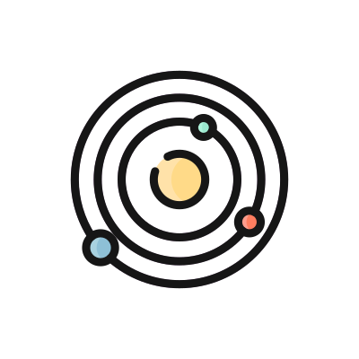

Orbital Maneuvers Calculator

Interactive companion to Lesson 4 (Orbital Maneuvers) of the Orbital Dynamics course. It computes impulsive
maneuvers under two-body dynamics: coplanar impulses and the velocity triangle, Hohmann and bi-elliptic transfers,
plane changes, rotation of the line of apsides and phasing (rendezvous). Every maneuver reports the ΔV, the transfer
time and the propellant mass (Tsiolkovsky), and is shown in interactive 2D/3D plots with time animations of the
trajectory. Formulas follow the lesson slides and the math is rendered with KaTeX.
Open the calculator →